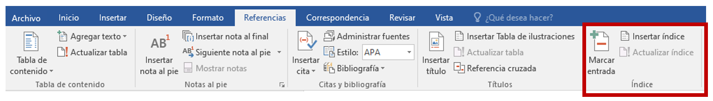
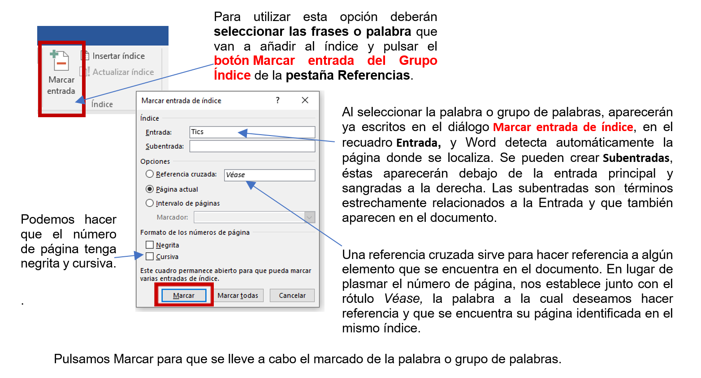
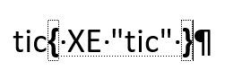
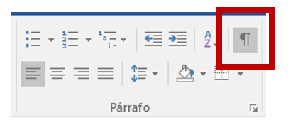
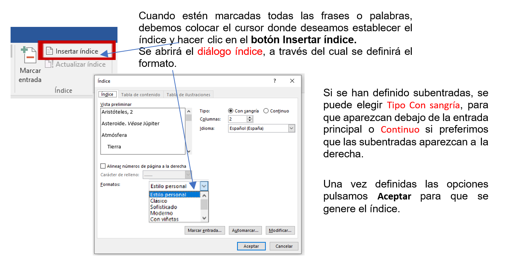

Un índice es una lista de términos importantes ordenados alfabéticamente, acompañados del número de página donde se encuentra dicha palabra. Word llama índice lo que normalmente le llamamos índice alfabético o glosario. Se suele colocar al final de un documento para encontrarlos de manera rápida y sencilla.

INSERTAR MARCAS DE ÍNDICE
Para crear un índice debemos revisar el documento y crear todas las entradas que deseemos que posteriormente aparezcan en el índice.

Para seguir estableciendo marcas, simplemente se hace clic sobre el documento y nos desplazamos hasta la siguiente frase o palabra de nuestro interés, se selecciona y la frase de ENTRADA se actualiza en el cuadro de diálogo. Damos clic en Marcar y así sucesivamente con todas las marcas. Cuando terminemos de marcar, presionamos sobre el botón Cerrar.
NOTA: Es importante especificar que cada vez que se marca una palabra, establece un código y se visualiza de forma simular a
esto facilita para identificar cuáles palabras han sido marcadas y poder localizarlas para en caso de querer eliminarlas posteriormente de la tabla del índice. Así como para identificar otras marcas de párrafo. Si deseamos que no se visualicen los códigos en el documento, deben desactivar la opción en la Pestaña Inicio - Grupo Párrafo.

INSERTAR ÍNDICE
